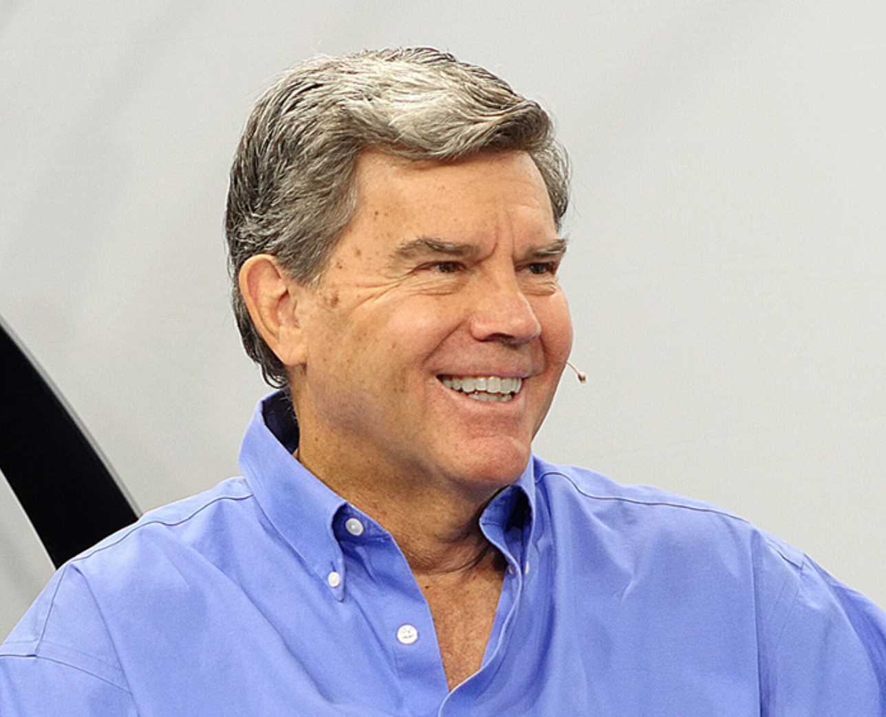

Turner Whitted
NVIDIA
Turner Whitted was a co-inventor of the signal processing algorithm for ClearType and invented recursive ray tracing for global illumination. He co-founded Numerical Design Limited in 1983 and served as president and technical director until 1996. In his early career he designed digital test equipment, antenna measurement systems, and components of a sonar signal processor.
He earned BSE and MS degrees from Duke University and a PhD from North Carolina State University, all in electrical engineering. He is an adjunct research professor of Computer Science at the University of North Carolina and adjunct professor of Electrical and Computer Engineering at North Carolina State University. In the past he has served on the editorial boards of IEEE Computer Graphics and Applications and ACM Transactions on Graphics, was papers chair for SIGGRAPH 97, and served on the SIGGRAPH executive committee. He is an ACM Fellow and a member of the National Academy of Engineering.